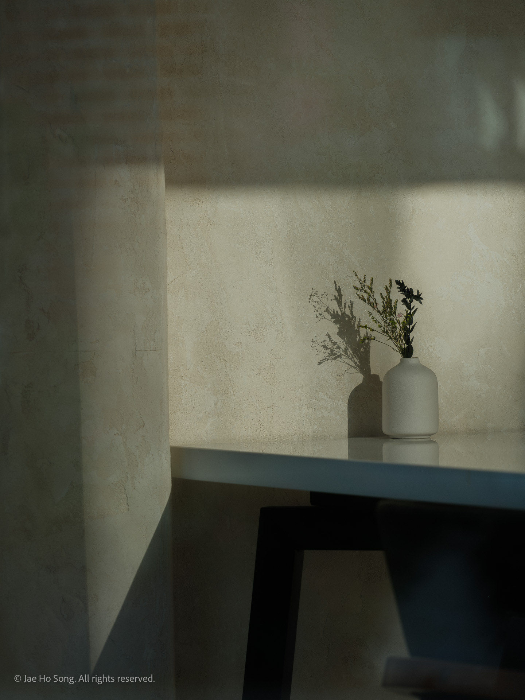

Incidental
2026
어쩌다 마주친 그 모습, 그 낯설음 속에서 또 다른 나를 발견한다.
In that unexpected encounter, within its unfamiliarity, I discover an unexamined self.


2026
어쩌다 마주친 그 모습, 그 낯설음 속에서 또 다른 나를 발견한다.
In that unexpected encounter, within its unfamiliarity, I discover an unexamined self.
